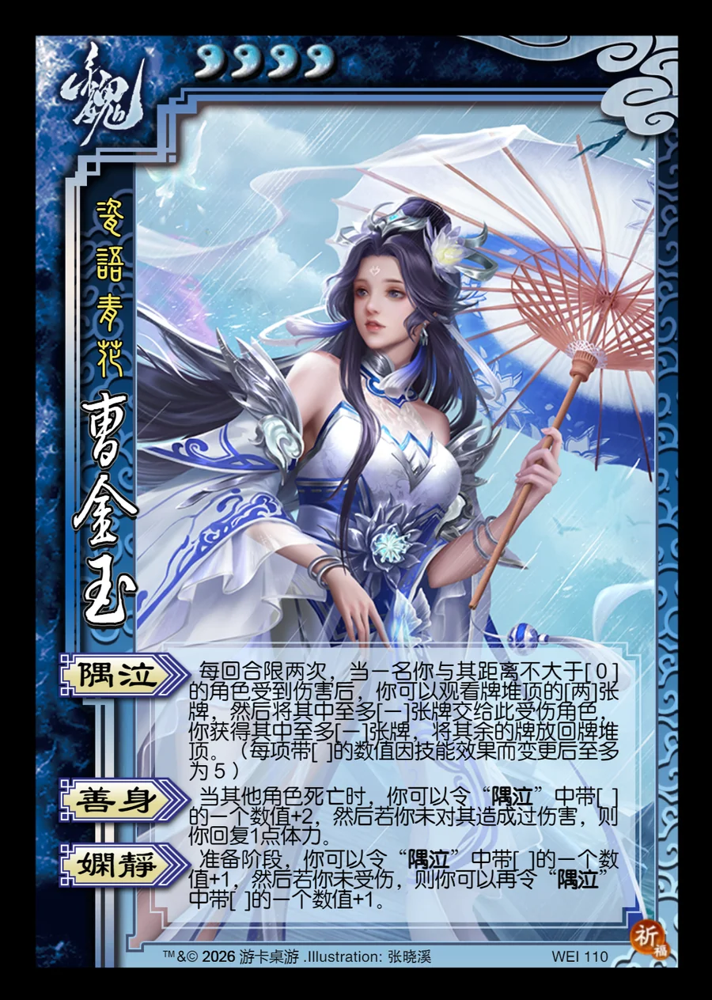

点击卡面查看大图
魏
曹金玉
♥4瓷语青花
隅泣
每回合限两次，当一名你与其距离不大于[0]的角色受到伤害后，你可以观看牌堆顶的[两]张牌，然后将其中至多[一]张牌交给此受伤角色，你获得其中至多[一]张牌，将其余的牌放回牌堆顶。（每项带[ ]的数值因技能效果而变更后至多为5）
善身
当其他角色死亡时，你可以令“隅泣”中带[ ]的一个数值+2，然后若你未对其造成过伤害，则你回复1点体力。
娴静
准备阶段，你可以令“隅泣”中带[ ]的一个数值+1，然后若你未受伤，则你可以再令“隅泣”中带[ ]的一个数值+1。